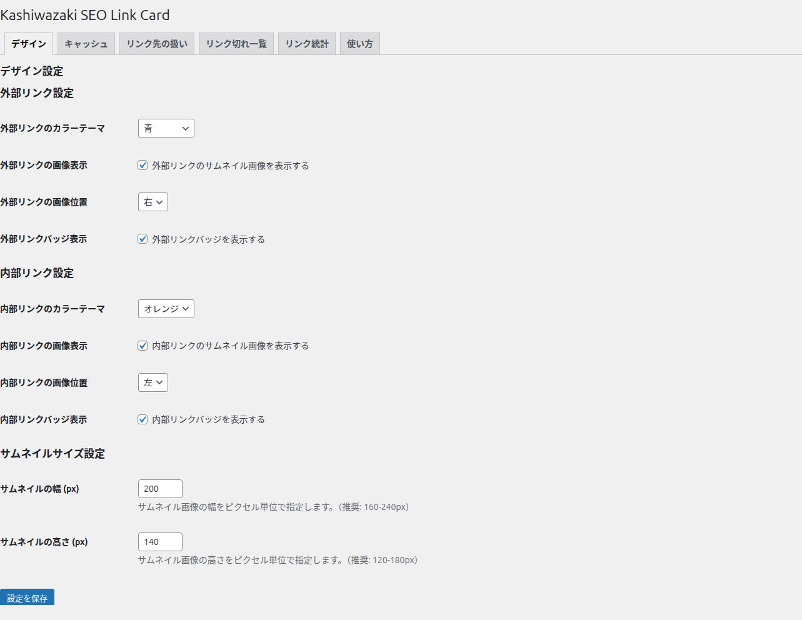
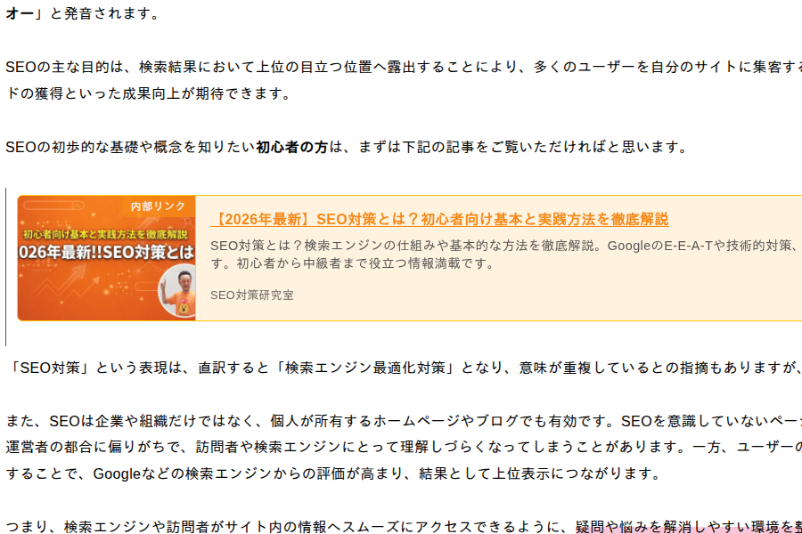
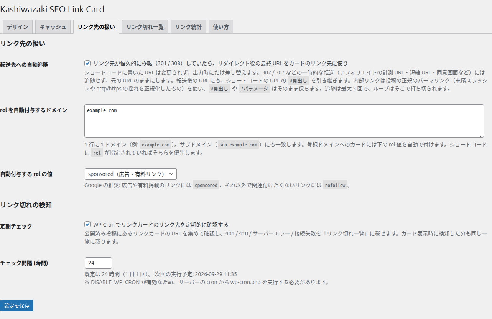
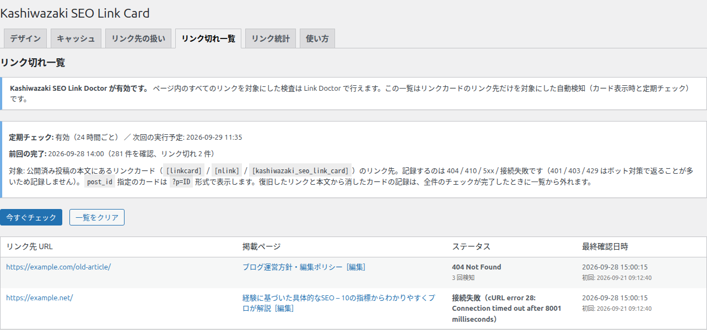
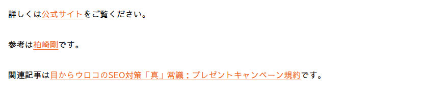
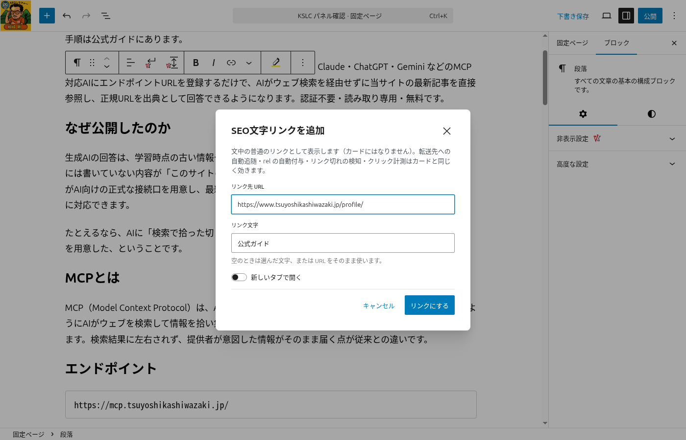
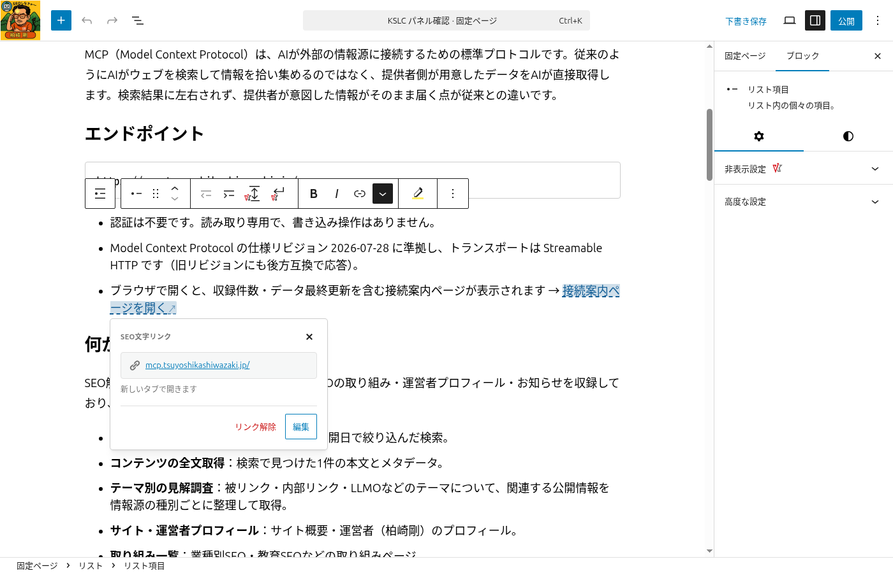
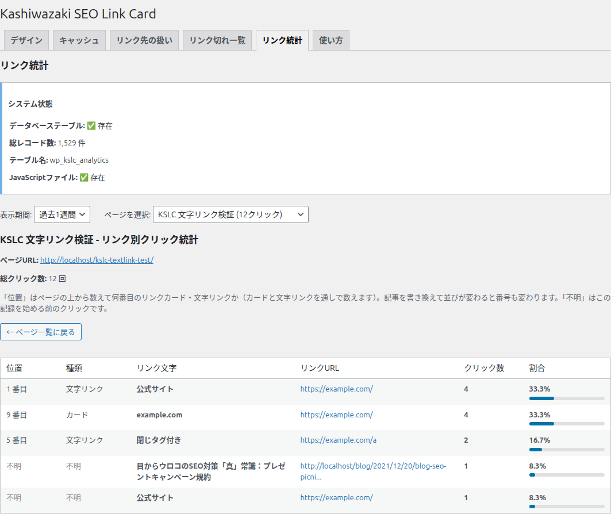

リンクカードの使い方
Kashiwazaki SEO Link Card のリンクカード表示、クリック解析、デザインカスタマイズの各機能について詳しく説明します。
リンクカード表示
リンクカードは、URLからOGP（Open Graph Protocol）情報を自動取得し、タイトル・説明文・サムネイル画像を含むリッチなカード形式で表示します。

フロントエンド表示例

リンクカードの生成
投稿や固定ページの編集画面で、リンクカードとして表示したいURLを指定します。
プラグインが wp_safe_remote_get を使用してリンク先のOGP情報を自動取得します。
取得したOGP情報（og:title、og:description、og:image）を基に、リンクカードが生成されます。
メモ
OGP情報が設定されていないURLの場合、HTMLの <title> タグやメタディスクリプションからの情報取得を試みます。
外部・内部リンクの自動判別
プラグインはリンク先URLのドメインを自動判定し、外部リンクと内部リンクを自動的に判別します。
| リンク種別 | 動作 |
|---|---|
| 内部リンク | 同一ドメインへのリンク。内部リンク用のバッジやスタイルが適用されます |
| 外部リンク | 異なるドメインへのリンク。外部リンク用のバッジやスタイルが適用されます |
転送先への自動追随
リンク先が恒久的に移転（HTTP 301 / 308）している場合、OGP 取得時に得たリダイレクト後の URL をカードのリンク先（href と cite）に使います。ショートコードに書いた URL 自体は変更されず、出力時にだけ差し替えます。「リンク先の扱い」タブで OFF にできます（既定 ON）。

| 転送の種類 | 動作 |
|---|---|
| 301 / 308（恒久的な移転） | リダイレクト後の URL にリンクします。転送後の URL に #見出し が無ければ、ショートコードの URL の #見出し を引き継ぎます |
| 302 / 307 など（一時的な転送） | 追随せず、元の URL のままにします。アフィリエイトの計測 URL・短縮 URL・同意画面を経由するリンクを壊さないためです |
| 内部リンク | 投稿の正規のパーマリンクにそろえます（末尾スラッシュや http/https の揺れを正規化）。#見出し と ?パラメータ は保ち、/page/2/ のようにパーマリンクとパスが異なる URL は変更しません |
メモ
追随は最大 5 回です。転送のループや回数超過は WordPress の HTTP API が打ち切り、簡易カードで表示されます。
リンク切れの検知と一覧
リンク先が 404 / 410 / サーバーエラー（5xx）/ 接続失敗を返したときに記録し、管理画面の「リンク切れ一覧」タブで確認できます。post_id 指定の投稿が削除されていた場合も記録します（一覧には ?p=ID 形式で表示されます）。

| 検知のタイミング | 説明 |
|---|---|
| カードの表示時 | OGP 情報の取得に失敗したときに記録します。失敗した URL は 1 時間は再取得しません |
| 定期チェック（WP-Cron） | 公開済み投稿の本文にあるリンクカードと文字リンク（[linktext] とブロックエディターの「SEO文字リンク」）のリンク先を確認します。既定は 24 時間ごと（1〜720 時間で変更可）。1 回の実行は 20 秒を上限とし、残りは 1 分後に続きから確認します |
| 今すぐチェック | 「リンク切れ一覧」タブのボタンで、定期チェックと同じ確認をその場で始めます |
メモ
401 / 403 / 429 はボット対策で返ることが多いため記録しません。復旧したリンクは次の確認で一覧から外れ、本文から消したカードの記録は定期チェックが全件を確認し終えたときに一覧から外れます（対象は公開済み投稿の本文にあるカードです。ウィジェットなど本文の外に置いたカードの記録は、全件チェックのたびに外れて次の表示で再記録されます）。同作者の Kashiwazaki SEO Link Doctor はページ内のすべてのリンクを手動で検査するプラグインで、役割が異なるため併用できます。
rel の自動付与
「リンク先の扱い」タブに登録したドメイン（サブドメインを含む。www. の有無は問いません）へのカードに、rel="sponsored" または rel="nofollow" を自動で付けます。ショートコードに rel を指定した場合はそちらが優先されます。target="_blank" のときの noopener は従来どおり付きます。
文中の文字リンク
カードではなく、文章の途中に「〇〇の詳細はこちらです」のような普通の文字リンクを置くときは [linktext] を使います。見た目は文字リンクのまま、転送先への自動追随・rel の自動付与・リンク切れの検知・クリック解析がカードと同じく効きます。
詳しい手順は[linktext url="https://example.com/guide/" text="公式ガイド"]をご覧ください。表示されるのは段落の中の <a> だけです。カードの枠や引用（<blockquote>）は出しません。
<p>詳しい手順は<a href="https://example.com/guide/" target="_blank" rel="noopener" class="kslc-text-link kslc-text-link-external">公式ガイド</a>をご覧ください。</p>
| 書き方 | 動作 |
|---|---|
[linktext url="URL" text="文字"] | 「文字」をリンク文字にします |
[linktext url="URL"] | text を省くと、リンク先のタイトル（外部は OGP のタイトル、内部は記事タイトル）をリンク文字にします |
[linktext post_id="123" text="文字"] | 投稿 ID で内部リンクにします |
target / rel | カードと同じです。外部リンクは既定で新しいタブ（noopener 付き）、登録ドメインへは rel を自動で付けます |
メモ
閉じタグ（[/linktext]）は使いません。閉じタグ付きで書いた場合も壊れないようにしてあり、中身があれば text の代わりにリンク文字として使います。閉じタグなしと閉じタグ付きが同じ記事に混ざっても、文章が消えることはありません。リンク先の投稿が削除されているなどでリンク先が決まらないときは、リンクを外して文字だけを残します（文章が途中で欠けません）。正式名は [kashiwazaki_seo_link_text] で、同じ動作です。
ブロックエディターから入れる
ブロックエディターでは、ショートコードを書かずに普通のリンクと同じ感覚で入れられます。エディター上でもリンクとして見え（破線の下線と ↗ の印で普通のリンクと見分けられます）、あとからクリックして直せます。
段落の中でリンクにしたい文字を選び、ツールバーの ▼（さらに表示） から SEO文字リンク を選びます。
リンク先 URL を入力し、必要なら 新しいタブで開く を切り替えて リンクにする を押します。リンク文字を書き換えると、選んだ文字がその文字に置き換わります。

あとから直すときは、リンクの中をクリックします。リンク先と「新しいタブで開くか」を示す小窓が開きます。編集 を押すと URL と 新しいタブで開く を変えられ、保存 で反映します。リンクを外すときは リンク解除 を押します。

メモ
ブロックエディターで入れたリンクは、本文には目印（class="kslc-textlink"）の付いた普通のリンクとして保存され、表示するときに転送先への自動追随・rel の自動付与・クリック解析の設定が加わります。プラグインを停止しても普通のリンクとして表示されます。リンク切れの定期チェックの対象にもなります。
クリック解析
リンクカードと文字リンク（[linktext]）のクリック数は、専用のカスタムテーブル（wp_kslc_analytics）に記録されます。フロントエンドのアナリティクスJS（2KB）がクリックイベントを検知し、AJAXでサーバーに送信します。
クリックごとに、掲載ページ・リンク先 URL・リンク文字に加えて、種類（カード / 文字リンク）と位置（そのページの上から何番目のリンクか。カードと文字リンクを通しで数えます）を記録します。同じリンク先へのカードと文字リンクが 1 つのページにあっても、どちらが押されたかを分けて確認できます。
解析画面の使い方
WordPress管理画面の Kashiwazaki SEO Link Card を開き、リンク統計 タブを選びます。
ページ一覧のページ名をクリックすると、そのページのリンク 1 つずつについて、位置・種類・リンク文字・リンク先 URL・クリック数・割合が表示されます。「位置」は記事を書き換えて並びが変わると変わります。「不明」は種類と位置の記録を始める前のクリックです。

統計データを基に、ユーザーがよくクリックするリンクを分析し、コンテンツ戦略の改善に活用してください。
ヒント
クリック解析データを活用することで、ユーザーにとって価値の高いアウトバウンドリンクを特定し、コンテンツ内のリンク配置を最適化できます。
デザイン設定
リンクカードのデザインは、管理画面の デザイン タブから細かくカスタマイズできます。
カラーテーマ
サイトのデザインに合わせてカラーテーマを選択できます。テーマを変更すると、リンクカードの枠線、背景色、テキスト色などが一括で変更されます。
サムネイル位置
| 位置 | 説明 |
|---|---|
| 左 | サムネイル画像をカードの左側に表示します。標準的なレイアウトです |
| 右 | サムネイル画像をカードの右側に表示します |
バッジ設定
リンクカードに表示されるバッジ（外部リンク・内部リンクの識別ラベル）の表示・非表示を設定できます。
ヒント
バッジを表示することで、ユーザーはリンク先が外部サイトか同一サイト内かを視覚的に判断できるため、ユーザー体験の向上につながります。
REST API
本プラグインはREST APIエンドポイント（/wp-json/kslc/v1/）を提供しています。外部ツールやカスタムテーマからリンクカードのデータにアクセスする際に利用できます。
注意
REST APIエンドポイントへのアクセスは、適切な認証と権限が必要です。公開サイトでREST APIを使用する場合は、セキュリティ設定を確認してください。
フロントエンドアセット
本プラグインがフロントエンドに出力するアセットは以下の通りです。
| アセット | 詳細 |
|---|---|
| CSS | 約11KB - リンクカードのスタイルシート |
| JavaScript | 約2KB - クリック解析用のアナリティクススクリプト |
| サムネイル画像 | loading="lazy"・decoding="async" と、設定のサムネイルサイズに合わせた width / height 属性を付けて出力します（レイアウトシフトの抑制） |